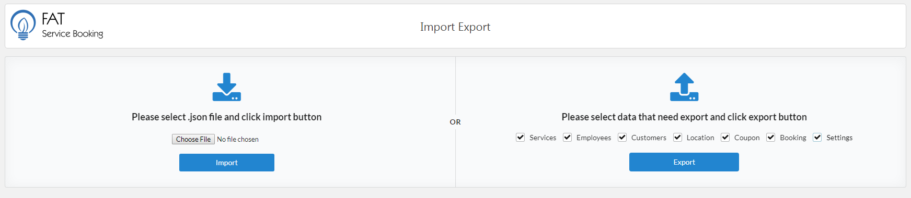
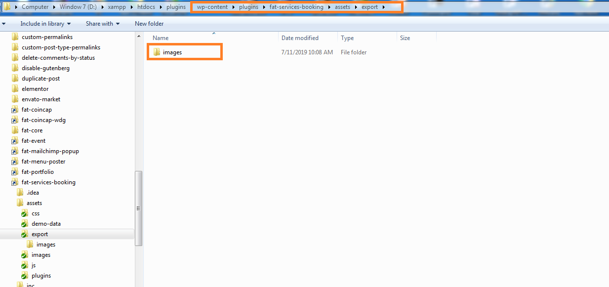
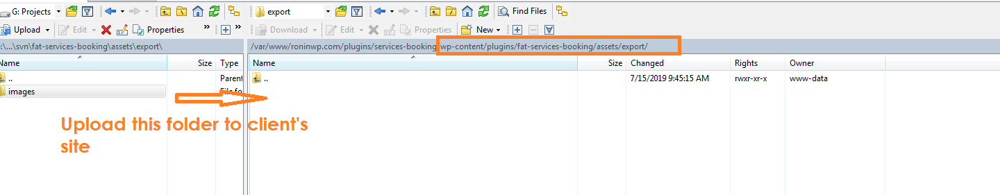

Import - Export
In some case, you want remove data from develop site to your client site. You can use this feature
To move data, please do follow:
- Log into your WordPress admin panel.
- Navigate to FAT Services Booking » Import Export.
- 1. Export:
- 1.1: Check all checkbox in export section
- 1.2: Click 'Export' button. It will be open popup save file to your machine
- 1.3: Move images resource from develop site to client's site: Open folder 'export' at 'wp-content\plugins\fat-services-booking\assets\export' on your develop site.
Copy and upload 'images' folder to 'wp-content\plugins\fat-services-booking\assets\export' on client's site via FTP
- 2. Import:
- 2.1: Navigate to FAT Services Booking » Import Export
- 2.2: Click 'Choose File' button. It will be open popup select file. Please select file that you have been saved when export
- 2.3: Click 'Import' button. It will be execute import data from your export file

Import - Export screen.

Image resource path.

Upload images folder to client's site.